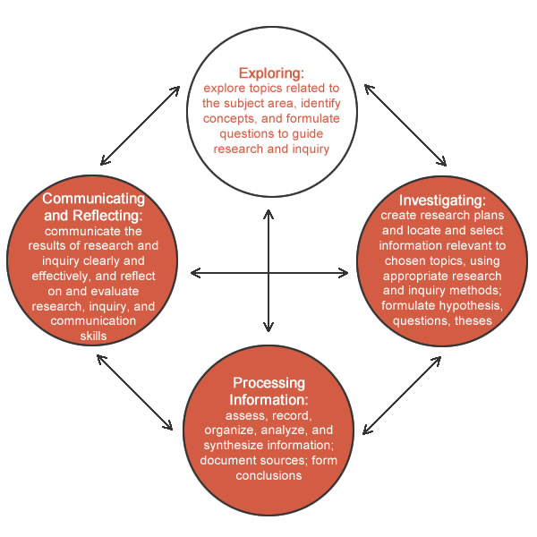

Research Inquiry Process

Research Inquiry Process
We will explore each step in the Research Inquiry Process as we progress through this course, but for now, let’s take a closer look at the first step.
Step One: Exploring
The first step of the inquiry process is to explore. When exploring a topic in social science, you must identify key concepts and formulate questions.
“key” important or essential
“concept” is a general notion or idea
For example:
Drug addiction costs Canada billions of dollars in health care services.
When first investigating a topic, you can use the key concepts to help you generate key terms.
If we break it down, we know ‘key’ means important. ‘Term’ means a word that stands for something. Therefore, ‘key terms’ are the important words you use to search for a topic and guide your research. They are often called keywords.
For example:
Drug addiction is on the rise. It costs Canada billions of dollars to support healthcare industries and support community intervention strategies.
The key concepts, or most important ideas, in this sentence are as follows:
The key terms, or keywords, in this sentence are:
In general, the more words you use, the fewer results you will get in a search. Sometimes a search will reveal nothing, so you need to reword the key terms.
Essentially, you are looking for synonyms or words that have the same meaning.
In the example above, you might search for the following:
The second task when exploring topics is to formulate research questions.
A research question is a question that can be answered through research.
It should be a question that requires more than a couple of facts to answer it, but it should also be focused and not so broad that you need to find volumes of information to come up with an answer.
For example:
Is television a bad influence?
This research question is good but still too broad.
For example:
Are violent cartoons on television exerting a harmful influence on children?
This is a better research question.
For example:
Do children act more aggressively after watching violent cartoons?
This is the best research question.
Using the example from above, the best question stretches the better question by specifically asking about aggression rather than the more general “harmful influence.”
The best questions will still allow for multiple answers that depend on using a variety of perspectives, but it will provide a focus for the researcher to fully engage with the question.
|
Good |
Better |
Best |
|
What was the Battle of Vimy Ridge? |
Why was Vimy Ridge an important battle to Canadians? |
How did the Battle of Vimy Ridge help shape Canada as a nation? |
|
Why is body image important to talk about? |
How does watching television help children with understanding body image? |
Are adolescents who understand the nature of media less prone to its negative effects on body image? |
|
Are video games good for you? |
How do video games help children with learning? |
What are some of the positive physiological effects on male toddlers who play video games? |
Here is some helpful information that will further assist you in writing a good research question.
This document outlines how to fine-tune successful research questions.
Multiple Choice Activity - Research Inquiry Process